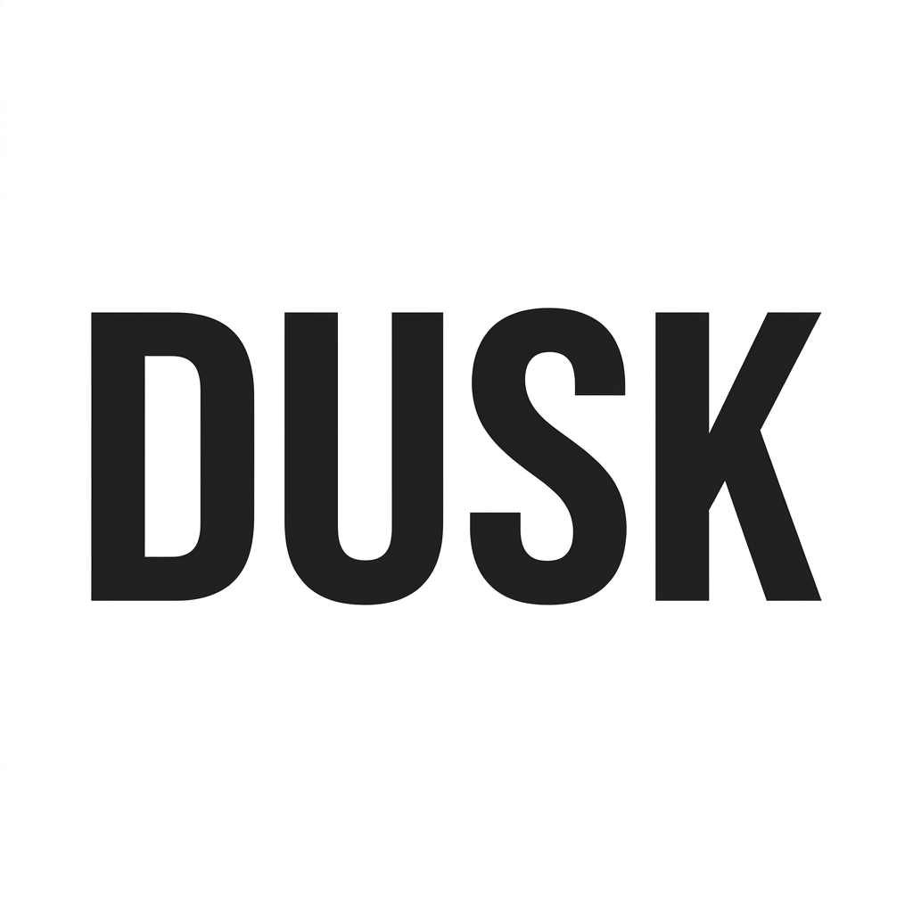

A structured delivery plan to support scalable product data

Saba Haroon
Dusk is a premium brand, and your tech stack should reflect that. You aren't just buying software. You're moving from fixing mistakes to growing the business. I'll help you stop worrying about spreadsheets and start launching products with the confidence a high-end brand deserves.
I'll focus on the most painful data problems first. We'll stop the data issues within the first 30 days.
I work in 2-week sprints. You'll see progress every fortnight in our Linear dashboards, so we're always aligned on Dusk's goals.
Auditing sources like NetSuite, Shopify, and local files.
Planning labels, attributes, and categories for the new system.
Deciding who updates what and who approves the final info.
This is where I’d find the messy bits early, so we’re not unpicking things later. It’s about making sure the structure works properly before anything gets built on top.
Building safe, high-speed links between NetSuite and Akeneo.
Defining the rules that determine when data moves to Shopify.
Securing who can edit data to guarantee high-quality info.
I'd work closely with the developers to make sure each integration is set up properly. The aim is a clean, reliable flow for Dusk’s team, without exposing the underlying complexity.
Moving Dusk's core product list into the new PIM system.
Deleting duplicates and fixing broken symbols from old records.
Reviewing every record to ensure the data is perfect.
This phase is all about cleaning things up properly before anything moves across, so Dusk isn’t dealing with legacy issues later.
Testing the system to ensure everything loads ultra-fast.
Guided sessions where your team members check the actual tools.
Smoothing every detail to ensure the tool is easy to use.
I wouldn’t move to Go-Live until the team is fully comfortable. The system needs to work for Dusk’s people, not just be technically complete.
Visual guides to help everyone learn the system quickly.
On-call help available for the first 30 days after launch.
Checking our targets: launch time, accuracy, and operational speed.
A successful launch and project autonomy is about handing things over properly, so the team can run it day to day without relying on external support. I put the system and guidance in place to make that possible.
Less time typing, more time on growth strategy.
New product launches become lightning fast.
Total info accuracy across every sales channel.
Dusk management will never have to ask "Where are we?". I keep every update, decision, and roadblock recorded in Linear so you are always in the loop.
Every subtask here is already mapped into a 15-step Linear backlog. It starts with Discovery (P1) and moves through to ROI Review (P5), keeping things clear, structured, and fully traceable at each stage.
Making sure the technology works properly, the process is clear, and Dusk is set up to grow.
Saba Haroon